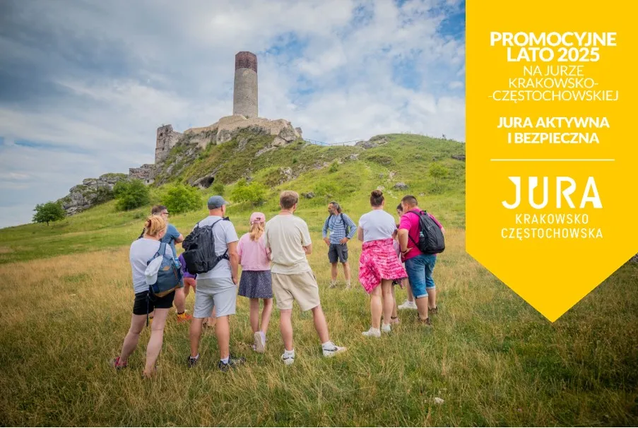

Wycieczki
Nasz Fanklub zajmuje się organizacją wycieczek jedno- i kilkudniowych. Chciałeś pozwiedzać Jurę, ale brakowało Ci pomysłu, od czego zacząć? Albo może nie miałeś z kim jechać? Nasz Fanklub rozwiązuje te problemy i gwarantuje niezapomniane wrażenia i wspaniałą atmosferę!
